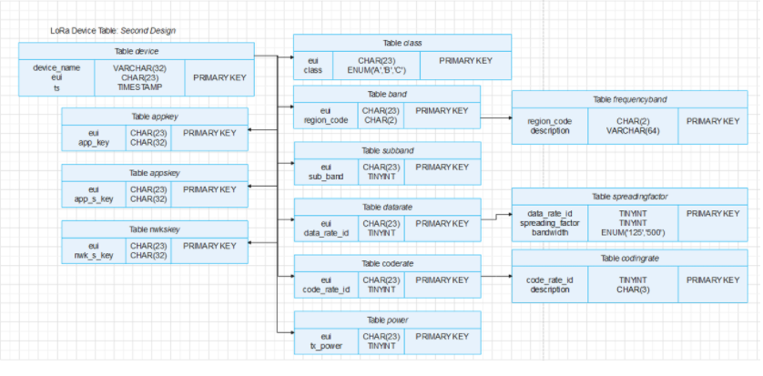
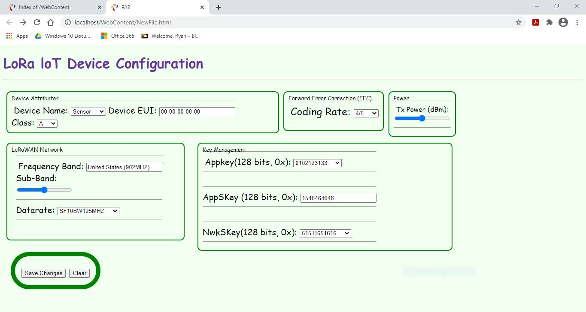

Description
This project is an extension of the web based user interface! It was taken one step further and expanded by implementing a normalized table and storing the value that a user inputs into SQL. Since we're dealing with SQL, stored procedures were also taken advantage of in order to modify the parameters. The jQuery API was used for accessing an SQL object for fetching and manipulating values.
Normalized Table Structure for a LoRa Device
OUTPUT
 This project uses the same interface as the web based interface. I once again used the eclipse IDE to edit the php, html, javascript code. It implements the normalized table structure shown above
The screenshot on the right shows the HTML file after submission, these parameters are stored in a new rendering of the HTML page in a browser shown in the last picture.
This was accomplished by invoking a php script using the jQuery API to retrieve all the device values associated with the previous form submission. The retrieved data populates the new HTML page in a new window! Javascript was used to dynamically edit the HTML page with the new values by using callback functions